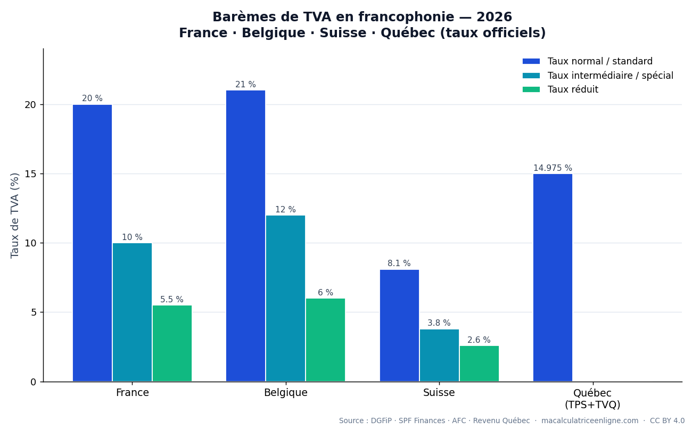

Fiche mémo des taux de TVA officiels en 2026 pour quatre territoires francophones, avec leur base légale et leur source gouvernementale.
| Territoire | Taux normal / standard | Taux réduits / spéciaux |
|---|---|---|
| 🇫🇷 France | 20 % | 10 % · 5,5 % · 2,1 % |
| 🇧🇪 Belgique | 21 % | 12 % · 6 % · 0 % |
| 🇨🇭 Suisse | 8,1 % | 3,8 % (hébergement) · 2,6 % |
| 🇨🇦 Québec | 14,975 % (TPS 5 % + TVQ 9,975 %) | — |

À retenir : la Suisse a le taux normal le plus bas (8,1 %), la Belgique le plus élevé (21 %) ; le Québec cumule deux taxes (TPS + TVQ) sur le prix HT, soit 14,975 % ; la France a relevé le gaz et l'électricité à 20 % depuis le 1ᵉʳ août 2025.
Sources officielles : DGFiP (economie.gouv.fr), SPF Finances (Belgique), Administration fédérale des contributions (Suisse), Revenu Québec & Agence du revenu du Canada. Jeu de données ouvert et citable : DOI Zenodo 10.5281/zenodo.20679859 (CC BY 4.0).